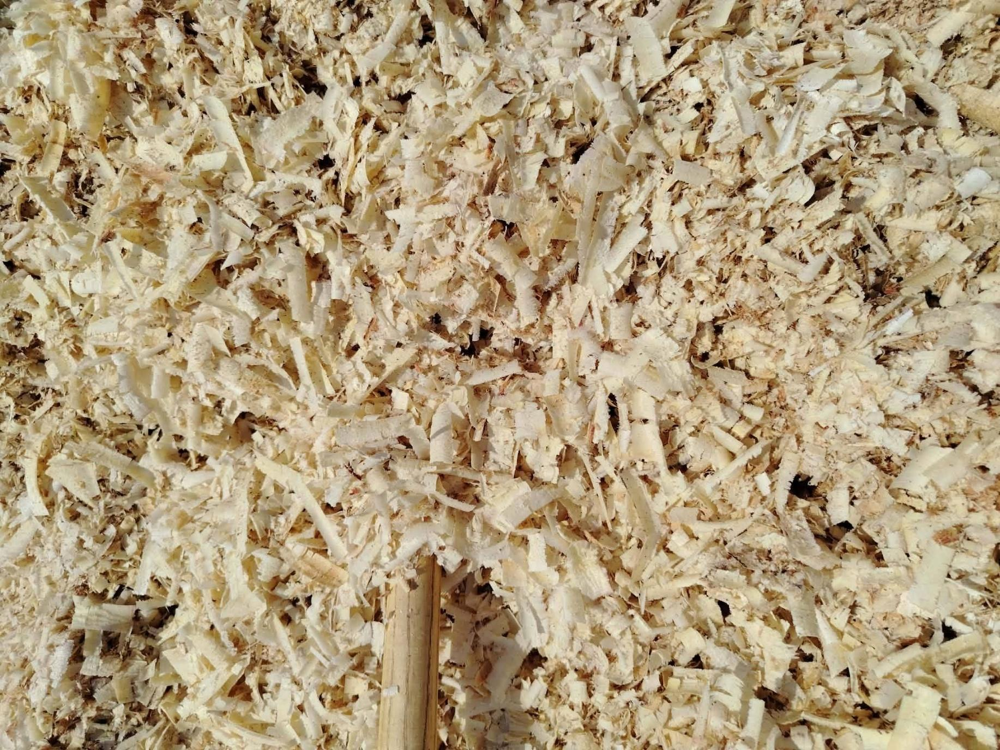
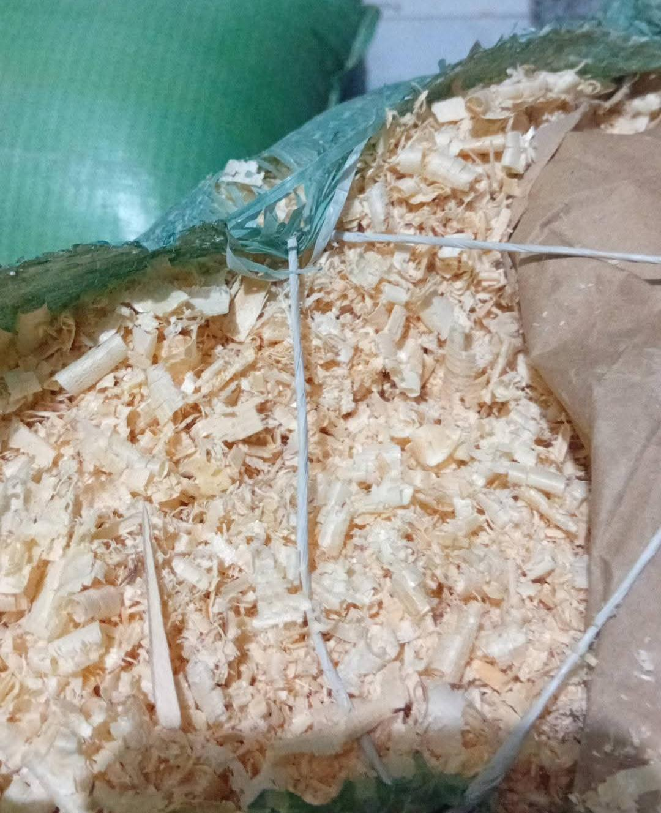

داخل ورش النجارة المنتشرة في قرية كتامة الغابة التابعة لمركز بسيون بمحافظة الغربية، لا تتوقف الاستفادة من الخشب عند تصنيع الأثاث فقط، بل تمتد إلى ما يتبقى منه أيضًا، وتحديدًا "نشارة الخشب" التي أصبحت مع الوقت مصدر دخل إضافي لبعض الأهالي والعمال داخل القرية.
رائحة الخشب والتروس التي لا تتوقف:
ومع أصوات ماكينات التقطيع ورائحة الخشب التي تملأ المكان، تتجمع كميات كبيرة من النشارة يوميًا داخل الورش، بعدما كانت تُلقى في القمامة دون الاستفادة منها.
"زمان كنا بنرمي النشارة وخلاص، لكن دلوقتي بقينا نجمعها في شكاير ونبيعها، وكل حاجة بقت ليها تمن."

مجالات الاستخدام وتوفير فرص العمل:
وتُستخدم النشارة في أكثر من مجال، منها مزارع الدواجن وبعض أعمال التدفئة، كما يأتي بعض التجار لشرائها من الورش بشكل مستمر. ويقول عم حسن عامل آخر: "في ناس شغلها الأساسي بقى جمع النشارة وبيعها، خصوصًا الشباب اللي مش لاقي شغل ثابت."
ومن جانب الأهالي، تقول أم كريم، ربة منزل: "في ناس هنا بقت تستفيد من النشارة بدل ما كانت بتترمي، وده ساعد بعض البيوت يبقى عندها دخل إضافي حتى لو بسيط." وقال سامح الشناوي، صاحب ورشة: "أي حاجة دلوقتي بقت مهمة، وحتى النشارة بقت بتدخل فلوس بدل ما تروح هدر."

الرؤية المحلية وتحديات التسويق:
وفي هذا السياق، قال أحد المسؤولين المحليين بمركز بسيون: "الاستفادة من مخلفات الورش بشكل اقتصادي تعتبر خطوة إيجابية، لأنها بتساعد على تقليل الهدر وتوفير فرص دخل لبعض الأهالي." ويؤكد عدد من أصحاب الورش أن بيع النشارة يساعدهم في تقليل جزء من الخسائر وارتفاع أسعار الخامات، حتى لو كان العائد بسيطًا.
ورغم بساطة هذه التجارة، فإنها تواجه بعض المشكلات، مثل انخفاض الأسعار أحياناً وعدم وجود جهة تنظم عملية البيع والشراء، بالإضافة إلى اعتمادها على السوق المحلي فقط.
ورغم أن النشارة تعتبر مجرد بقايا خشب، إلا أنها أصبحت مصدر رزق لعدد من الأسر داخل القرية، في صورة توضح كيف يمكن الاستفادة من أبسط الأشياء وتحويلها إلى عمل يوفر دخلًا ولو محدودًا.


أترك تعليقاً...